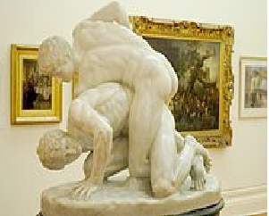

Mixed martial arts (MMA) sometimes referred to as cage fighting, is a full-contact combat sport based on striking, grappling and ground fighting, incorporating techniques from various combat sports and martial arts from around the world. The first documented use of the term mixed martial arts was in a review of UFC 1 by television critic Howard Rosenberg in 1993. The question of who actually coined the term is subject to debate.
During the early 20th century, various interstylistic contests took place throughout Japan and in the countries of the Four Asian Tigers. In Brazil, there was the sport of Vale Tudo, in which fighters from various styles fought with little to no rules. The Gracie family was known to promote Vale Tudo matches as a way to promote their own Brazilian jiu-jitsu style. In the West, the concept of combining elements of multiple martial arts was popularized by Bruce Lee's Jeet Kune Do during the late 1960s to early 1970s. A precursor to modern MMA was the 1976 Muhammad Ali vs. Antonio Inoki bout, fought between boxer Muhammad Ali and wrestler Antonio Inoki in Japan, where it later inspired the foundation of Pancrase in 1993 and Pride Fighting Championships in 1997.
Originally promoted as a competition to find the most effective martial arts for real unarmed combat, competitors from different fighting styles were pitted against one another in contests with relatively few rules. Later, individual fighters incorporated multiple martial arts into their style. MMA promoters were pressured to adopt additional rules to increase competitors' safety, to comply with sport regulations and to broaden mainstream acceptance of the sport. Following these changes, the sport has seen increased popularity with a pay-per-view business that rivals boxing and professional wrestling.
History
In Ancient China, combat sport appeared in the form of Leitai, a no-holds-barred mixed combat sport that combined Chinese martial arts, boxing and wrestling.
The Pancrastinae: A statue portraying the pancratium, an event which took place in the Roman Colosseum. Even as late as the Early Middle Ages, statues were put up in Rome and other cities to honor remarkable pankratiasts. This statue, now part of the Uffizi collection, is a Roman copy of a lost Greek original, circa 3rd century BC.
A scene of Ancient Greek pankratiasts fighting. Originally found on a Panathenaic amphora, Lamberg Collection.
In Ancient Greece, there was a sport called pankration, which featured grappling and striking skills similar to those found in modern MMA. Pankration was formed by combining the already established wrestling and boxing traditions and, in Olympic terms, first featured in the 33rd Olympiad in 648 BC. All strikes and holds were allowed with the exception of biting and gouging, which were banned. The fighters, called pankratiasts, fought until someone could not continue or signaled submission by raising their index finger; there were no rounds. According to the historian E. Norman Gardiner, "No branch of athletics was more popular than the pankration." There is also evidence of similar mixed combat sports in Ancient Egypt, India and Japan.
Origin of the term "MMA"
The first documented use of the name mixed martial arts was in a review of UFC 1 by television critic Howard Rosenberg, in 1993. The term gained popularity when the website newfullcontact.com, then one of the biggest covering the sport, hosted and reprinted the article. The first use of the term by a promotion was in September 1995 by Rick Blume, president and CEO of Battlecade Extreme Fighting, just after UFC 7. UFC official Jeff Blatnick was responsible for the Ultimate Fighting Championship officially adopting the name mixed martial arts. It was previously marketed as "Ultimate Fighting" and "No Holds Barred (NHB)", until Blatnick and John McCarthy proposed the name "MMA" at the UFC 17 rules meeting in response to increased public criticism. The question as to who actually coined the name is still in debate.
Regulation
The first state regulated MMA event was held in Biloxi, Mississippi on August 23, 1996 with the sanctioning of IFC's Mayhem in Mississippi show by the Mississippi Athletic Commission under William Lyons. The rules used were an adaptation of the kickboxing rules already accepted by most state athletic commissions. These modified kickboxing rules allowed for take downs and ground fighting and did away with rounds, although they did allow for fighters to be stood up by the referee and restarted if there was no action on the ground. These rules were the first in modern MMA to define fouls, fighting surfaces and the use of the cage.
In March 1997, the Iowa Athletic Commission officially sanctioned Battlecade Extreme Fighting under a modified form of its existing rules for Shootfighting. These rules created the three 5 minute round, one-minute break format, and mandated shootfighting gloves, as well as weight classes, for the first time. Illegal blows were listed as groin strikes, head butting, biting, eye gouging, hair pulling, striking an opponent with an elbow while the opponent is on the mat, kidney strikes, and striking the back of the head with closed fist. Holding onto the ring or cage for any reason was defined as a foul. While there are minor differences between these and the final Unified Rules, notably regarding elbow strikes, the Iowa rules allowed mixed martial arts promoters to conduct essentially modern events legally, anywhere in the state. On March 28, 1997, Extreme Fighting 4 was held under these rules, making it the first show conducted under a version of the modern rules.